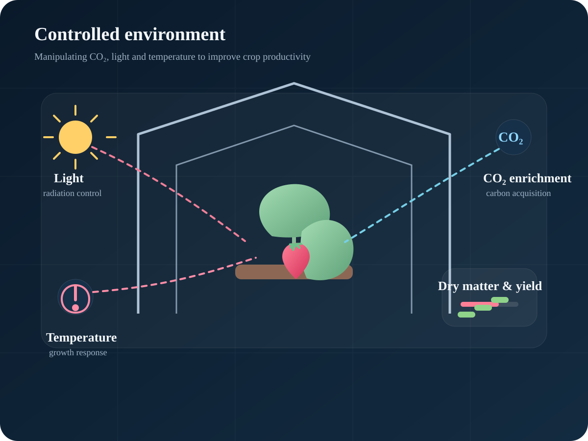

Observe
群落内のCO₂環境、光条件、温度条件と植物応答を同時に測定します。
02 / CONTROLLED ENVIRONMENT
CO₂、光、温度、群落構造などを操作し、植物がどのように炭素を獲得し、乾物と収量へ変換するかを研究します。

CORE QUESTION
群落内のCO₂環境、光条件、温度条件と植物応答を同時に測定します。
環境操作による短期的な光合成応答だけでなく、累積受光・乾物生産・収量まで追跡します。
環境制御を、投入量を増やす技術ではなく、資源利用効率を高める管理技術へ発展させます。
WHY IT MATTERS
局所・群落内CO₂施用、光環境、作物受光態勢などを組み合わせ、実際の施設園芸で使える制御方法へつなげています。
SELECTED EVIDENCE
光質・CO₂・群落内環境を操作し、短期的な光合成応答だけでなく長期の乾物生産と収量へつなげて評価しています。
異なる光質に対するイチゴ葉の光合成応答を整理し、光環境制御の生理学的基盤を検討。
DOI ↗ 2022群落内への局所CO₂施用を、乾物生産と果実収量の改善へつなげた研究。
DOI ↗ 2024群落内部のガス環境と空気流動を同時に扱い、Air/CO₂区で対照区より高い果実収量を確認。
DOI ↗科研費 基盤C（24K09149）では、3D・受光計測と養水分吸収速度を統合し、植物状態に応答する肥培管理を目指しています。
EXPLORE NEXT